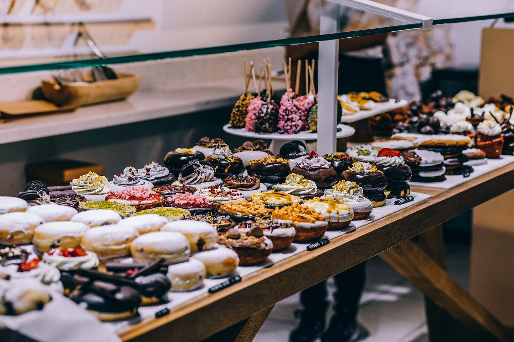
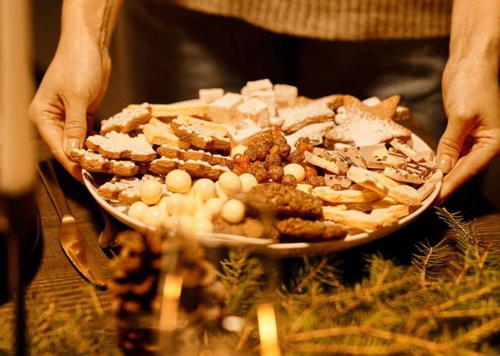
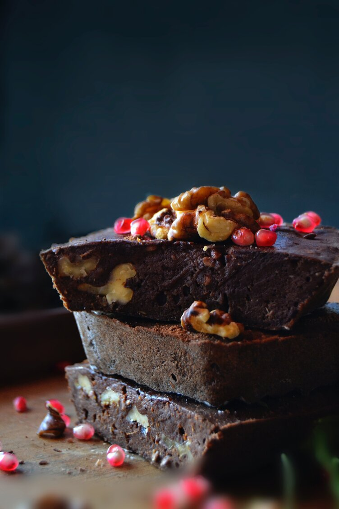

Danni's Bakery!
The most delicious desserts for your celebration
We bring the sweetness to your celebration
We have the must delicious desserts: lemon pie, fruit of passion pie, cookies, cupcake, brownies, donuts or we can make any special dessert you want, just ask and we do it for you. Our cookies have a texture and flavor story to tell your taste buds. From sweet and salty, to fruity, corny, chewy, crispy, fudgy, chocolatey, vanilla-y and confetti-y, consider yourself covered.


Month's most wanted
Danni's Brownies
Ingredients
- 1 1/2 cups granulated sugar*
- 3/4 cup all-purpose flour
- 2/3 cup cocoa powder, sifted if lumpy
- 1/2 cup powdered sugar, sifted if lumpy
- 1/2 cup dark chocolate chips
- 3/4 teaspoons sea salt
- 2 large eggs
- 1/2 cup canola oil or extra-virgin olive oil**
- 2 tablespoons water
- 1/2 teaspoon vanilla
- 1 cup of Nuts
Instructions
Preheat the oven to 325°F. Lightly spray an 8x8 baking dish (not a 9x9 dish or your brownies will overcook) with cooking spray and line it with parchment paper. Spray the parchment paper. In a medium bowl, combine the sugar, flour, cocoa powder, powdered sugar, chocolate chips, and salt. In a large bowl, whisk together the eggs, olive oil, water, and vanilla. Sprinkle the dry mix over the wet mix and stir until just combined. Add the nuts in the mix. Pour the batter into the prepared pan (it'll be thick - that's ok) and use a spatula to smooth the top. Bake for 40 to 48 minutes, or until a toothpick comes out with only a few crumbs attached (note: it's better to pull the brownies out early than to leave them in too long). Cool completely before slicing.*** Store in an airtight container at room temperature for up to 3 days. These also freeze well!
